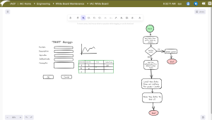

Revolutionizing Manufacturing IT: Introducing IACF's Advanced AI Capabilities
2024-05-30
In the ever-evolving landscape of manufacturing, efficiency, and innovation are crucial for maintaining a competitive edge. As businesses strive to streamline operations and reduce time-to-market, the integration of advanced technologies becomes imperative. IACF (Intelligent Automated Code Framework) stands at the forefront of this revolution, offering an innovative solution that bridges the gap between requirements and execution through its advanced AI capabilities.
A Unified Workspace for Seamless Design and development
One of the standout features of IACF is its ability to create UI mockups, business logic designs, and workflow charts within a single, integrated workspace. This holistic approach eliminates the need for multiple tools and platforms, allowing teams to collaborate more effectively and maintain a consistent vision throughout the development process.
The unified workspace for seamless design and development
By consolidating these critical stages of development into one platform, IACF not only simplifies the workflow but also reduces the potential for errors and miscommunications. This unified workspace is designed to foster collaboration between different departments, ensuring that everyone from UI/UX designers to business analysts and developers are on the same page.AI-Powered Code Generation
IACF's AI capabilities extend far beyond mere automation. Leveraging sophisticated machine learning algorithms, the platform can generate code for UI views, BPM logic, and workflow charts. This feature drastically reduces the time and effort required for coding, allowing developers to focus on more strategic tasks. The AI-driven code generation process is based on the mockups and designs created within the IACF workspace. This ensures that the generated code is aligned with the original vision and meets the specified requirements. Additionally, the AI continuously learns and improves from user feedback, making the code generation process more accurate and efficient over time.Streamlining Business Process Management
In the realm of business process management (BPM), IACF's AI-powered capabilities are a game-changer. The platform can analyze and optimize business processes, providing insights and recommendations that enhance efficiency and productivity. By generating BPM logic and workflow charts, IACF helps organizations visualize and streamline their processes, leading to more effective decision-making and resource allocation.Enhancing Workflow with AI-Generated Charts
Workflow management is a critical aspect of manufacturing IT solutions, and IACF excels in this area by offering AI-generated workflow charts. These charts provide a clear and detailed representation of the processes, helping teams identify bottlenecks and areas for improvement. With IACF, organizations can optimize their workflows to achieve better performance and faster turnaround times.The Power of AI in Manufacturing IT
The integration of AI into manufacturing IT solutions is not just a trend; it is a necessity for staying competitive in today's fast-paced market. IACF's advanced AI capabilities enable manufacturers to move seamlessly from requirements to execution, simplifying the entire development process. By automating code generation and providing valuable insights into business processes and workflows, IACF empowers organizations to innovate and excel.Case Studies and Success Stories
How to use AI capability in IACF to create UI and BPM in the same workspace
To understand the real-world impact of IACF's AI capabilities, one can look at the numerous success stories and case studies available on their website. For instance, the article Introducing IACF's AI-Powered Business Process Management highlights how businesses have successfully implemented IACF to streamline their processes. Similarly, the article Revolutionizing Manufacturing IT with IACF's AI-Generated Workflow Capability showcases the transformative power of AI in optimizing workflows. Finally, Revolutionizing Manufacturing IT with IACF's AI-Generated Code Feature demonstrates how AI-driven code generation can significantly reduce development time and improve efficiency.